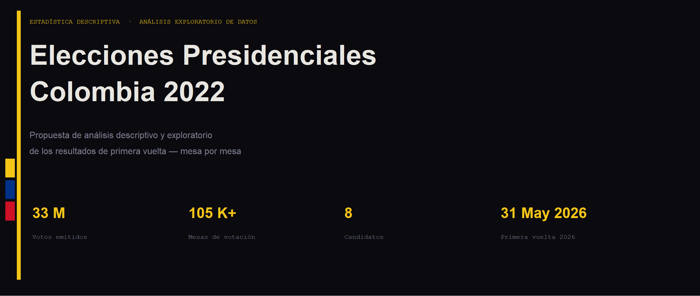
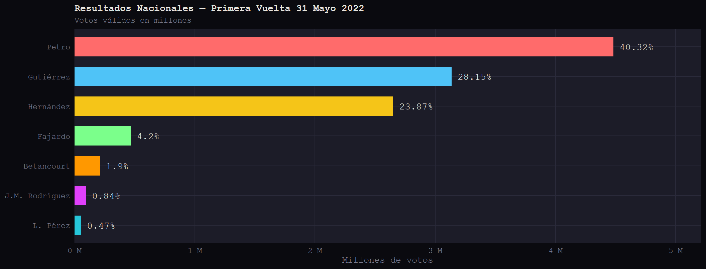
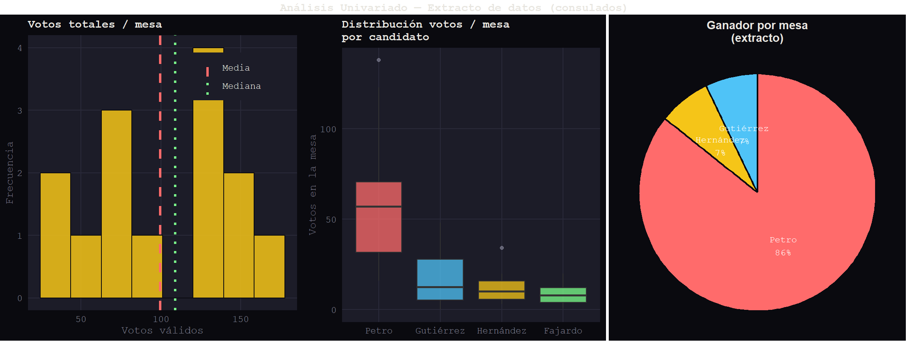
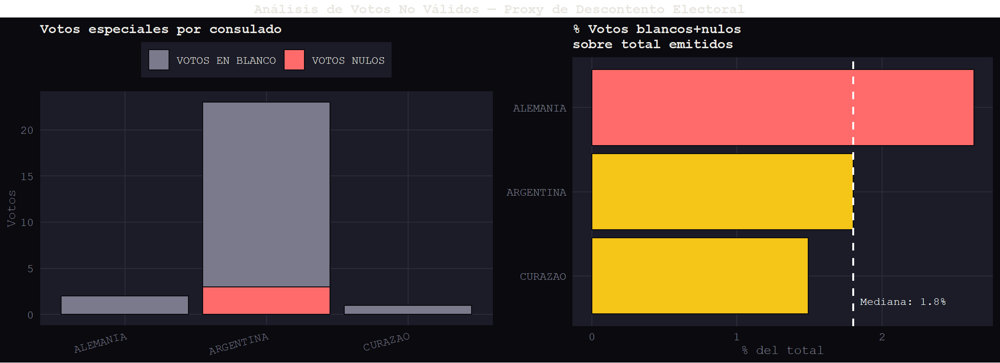
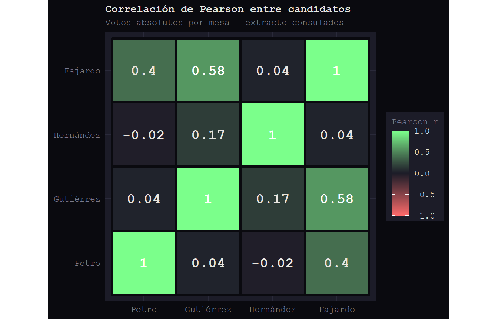
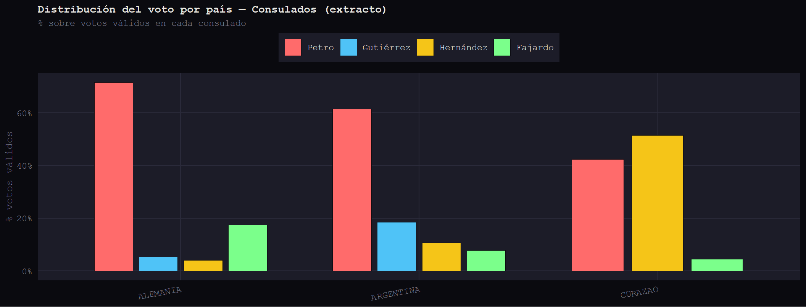
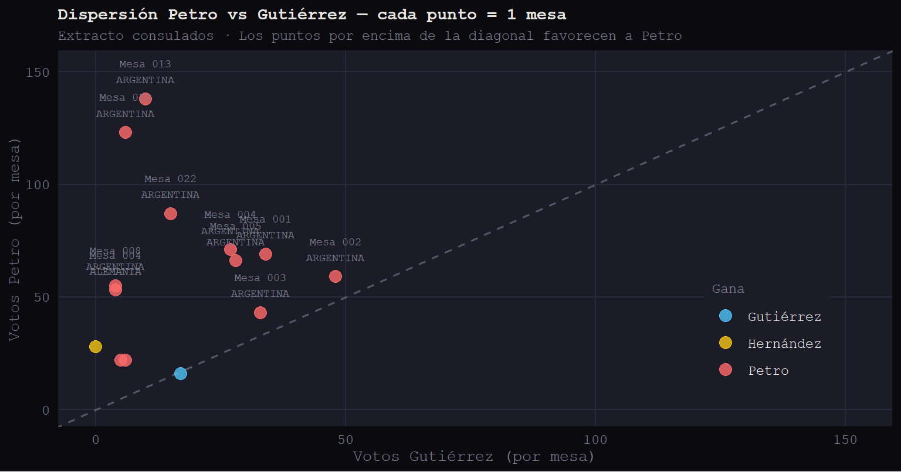
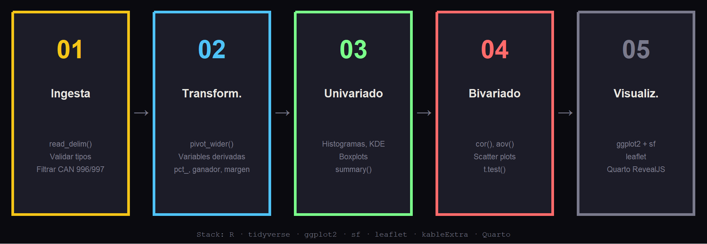
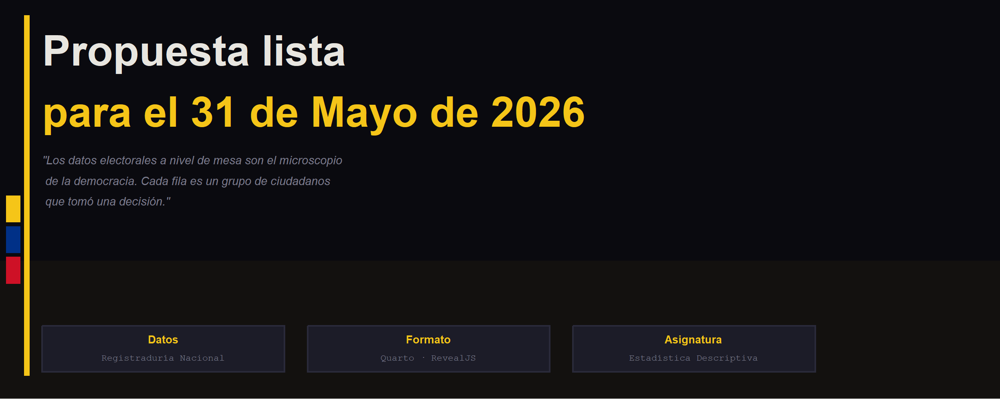

| Variable | validos | Media | Mediana | Desv.Std | Mín | Máx |
|---|---|---|---|---|---|---|
| total | 99.6, 109.0, 44.9, 34.0, 168.0 | NULL | NULL | NULL | NULL | NULL |
| Petro | NULL | 60.9 | 57 | 36.4 | 16 | 138 |
| Gutiérrez | NULL | 16.9 | 12.5 | 14.7 | 0 | 48 |
| Hernández | NULL | 12.3 | 10 | 8.3 | 3 | 34 |
| Fajardo | NULL | 8.2 | 8 | 5.5 | 1 | 20 |
Propuesta Descriptiva y Exploratoria — Primera Vuelta 2022 → 2026
2026-05-01

01 · La Base de Datos Estructura, variables, granularidad y calidad del dataset de la Registraduría
02 · Análisis Univariado Distribuciones, medidas de posición y dispersión por candidato, zona y mesa
03 · Análisis Bivariado Correlaciones, comparaciones entre candidatos y patrones geográficos
04 · Hipótesis y Metodología Preguntas exploratorias, herramientas y hoja de ruta para el trabajo final
01
▸ SECCIÓN
La estructura del archivo de la Registraduría a nivel de mesa de votación
| Campo | Descripción | Tipo | Ejemplo |
|---|---|---|---|
DEP / DEPNOMBRE |
Departamento | Categórica | 88 / CONSULADOS |
MUN / MUNNOMBRE |
Municipio o país | Categórica | 155 / ARGENTINA |
ZONA |
Zona electoral | Categórica | 05, 10 |
PUESTO / PUESNOMBRE |
Puesto de votación | Categórica | 02 / BUENOS AIRES |
MESA |
Mesa dentro del puesto | Categórica | 001 – 022 |
PARNOMBRE |
Partido / coalición | Categórica | PACTO HISTÓRICO |
CANNOMBRE |
Nombre del candidato | Categórica | GUSTAVO PETRO |
VOTOS |
Votos en esa mesa para ese candidato | Numérica | 53, 138 |
Warning
CAN=996 (Votos en Blanco) y CAN=997 (Votos Nulos) aparecen como candidatos — deben filtrarse antes del análisis con filter(!CAN %in% c(996, 997)).
Formato largo (long format)
Cada fila = 1 candidato × 1 mesa
Para análisis por mesa → pivot a formato ancho
library(tidyverse)
df <- read_delim("resultados_1v.csv", delim = ";")
# Separar votos especiales
validos <- df |>
filter(!CAN %in% c(996, 997))
# Pivot a formato ancho
mesa_df <- validos |>
pivot_wider(
id_cols = c(DEP, MUN, PUESTO, MESA),
names_from = CANNOMBRE,
values_from = VOTOS,
values_fn = sum,
values_fill = 0
)Variables derivadas propuestas:
total_validos — suma votos válidos por mesapct_[candidato] — participación relativa normalizadaganador_mesa — candidato con más votosmargen_victoria — diferencia entre 1° y 2°indice_shannon — entropía del voto (fragmentación)pct_blanco_nulo — proxy de descontento02
▸ SECCIÓN
Distribuciones individuales de las variables clave


| Variable | validos | Media | Mediana | Desv.Std | Mín | Máx |
|---|---|---|---|---|---|---|
| total | 99.6, 109.0, 44.9, 34.0, 168.0 | NULL | NULL | NULL | NULL | NULL |
| Petro | NULL | 60.9 | 57 | 36.4 | 16 | 138 |
| Gutiérrez | NULL | 16.9 | 12.5 | 14.7 | 0 | 48 |
| Hernández | NULL | 12.3 | 10 | 8.3 | 3 | 34 |
| Fajardo | NULL | 8.2 | 8 | 5.5 | 1 | 20 |
Note
Coeficiente de variación = Desv.Std / Media — mide la dispersión relativa entre mesas. Petro muestra la mayor variabilidad absoluta en este extracto.

03
▸ SECCIÓN
Correlaciones, comparaciones geográficas y patrones de votación

Tip
Con el dataset completo se esperaría una correlación negativa fuerte entre Petro y Gutiérrez — electorados opuestos en el espectro político.

Buenos Aires vota ~57% Petro, Curazao vota ~51% Hernández — patrones radicalmente distintos dentro del mismo segmento “exterior”.

Tip
Con el dataset nacional, este gráfico permitiría identificar mesas en disputa (zona central) vs mesas dominadas (extremos del gráfico).
04
▸ SECCIÓN
Preguntas exploratorias y hoja de ruta para el trabajo final
H1 · Geografía del voto progresista — ¿El porcentaje de votos por Petro aumenta con el tamaño del municipio? → lm(pct_Petro ~ total_votos_mun) + mapa coroplético
H2 · Varianza intra vs. inter municipal — ¿Las mesas dentro de un mismo municipio votan de forma más homogénea que entre municipios? → aov(votos ~ municipio) con test de Tukey
H3 · Voto exterior ≠ Interior — ¿Los colombianos en el exterior votan de manera estadísticamente diferente al interior? → t.test() o wilcox.test() para diferencia en medianas
H4 · Mesas anómalas — ¿Existen mesas con patrones de votación estadísticamente atípicos? → Z-score por departamento, distancia de Mahalanobis multivariada
| # | Análisis | Técnica en R | Nivel |
|---|---|---|---|
| 1 | Estadísticas descriptivas completas | summarise() + skewness() + kurtosis() |
Mesa |
| 2 | Mapas coropléticos interactivos | leaflet / ggplot2 + sf |
Municipal |
| 3 | Clustering de municipios | kmeans() / hclust() |
Municipal |
| 4 | Detección de mesas atípicas | mahalanobis(), Z-score |
Mesa |
| 5 | Diáspora vs interior | t.test(), wilcox.test() |
Segmento |
| 6 | Índice de competitividad | Margen 1°–2° con dplyr |
Municipal |
| 7 | Entropía del voto | Índice de Shannon manual | Mesa/Mun |
| 8 | Comparativa 2022 vs 2026 | bind_rows() + Δ% |
Nacional |

| Variable | Definición | Nivel | Uso |
|---|---|---|---|
| total_validos | Suma votos válidos en la mesa | Mesa | Normalización entre mesas |
| pct_[candidato] | Votos candidato / total_validos × 100 | Mesa | Comparar mesas con distinto total |
| ganador_mesa | Candidato con más votos en la mesa | Mesa | Mapa de ganadores a nivel micro |
| margen_victoria | Diferencia pct entre 1° y 2° | Mesa | Índice de competitividad |
| indice_shannon | Entropía de Shannon del voto (fragmentación) | Mesa/Mun | Concentración vs pluralismo |
| pct_blanco_nulo | (Blancos + Nulos) / votos emitidos | Mesa | Proxy de descontento |
| tipo_zona | Urbano / Rural / Exterior (derivado de ZONA) | Mesa | Segmentación territorial |

Registraduría Nacional del Estado Civil · Primera Vuelta 2022